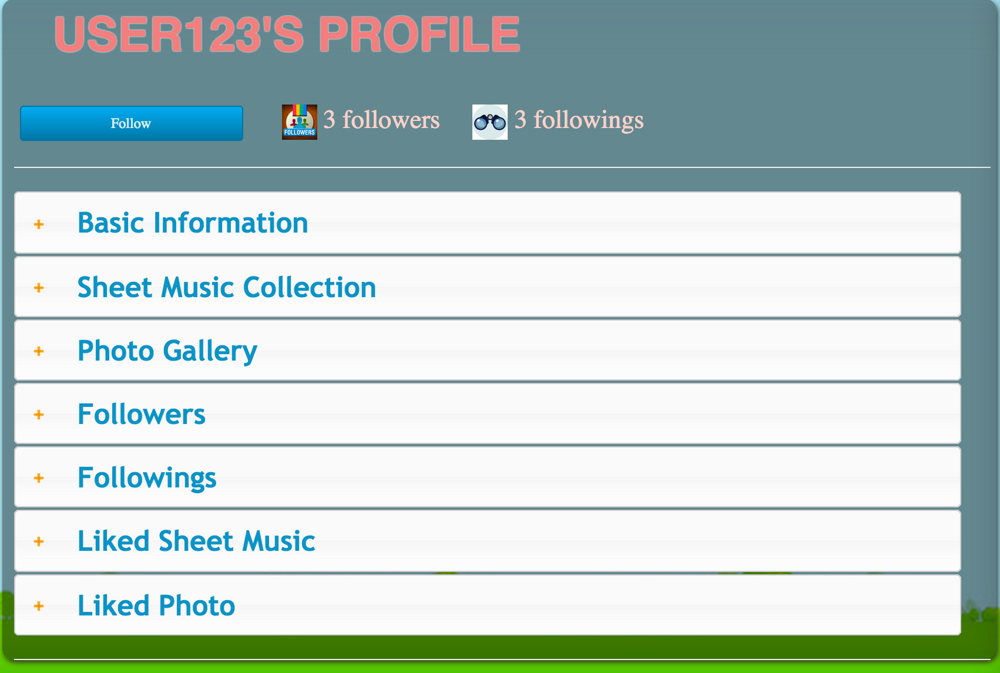

Personal Profile
Only members have access to this page by logging in.
Go to personal profile page (You need to log in first)
1. How to access to profile page
To look at profile page, you have to log in first
- To see my profile: click the "My Profile" option in the navigation bar. See Header page Documentationn
- To see my profile: click "username" shown on the top right side of any pages of this website
- To see any member's profile: click the name in any pages of this website. Details about this has
been mentioned in documentations of all other pages.
2. In a member's profile, you can:
- Follow the member
- See the member's basic information
- See all users the member follows
- See all users that are following this member
- See all sheet musics and photos the member likes
- Go to the member's Sheet Music collection and Photo gallery

3. About the implementation
The information dashboard on this page is implemented by using jquery accordion
Link to files:
Source code of profile Page
Source code of profile Page C# code